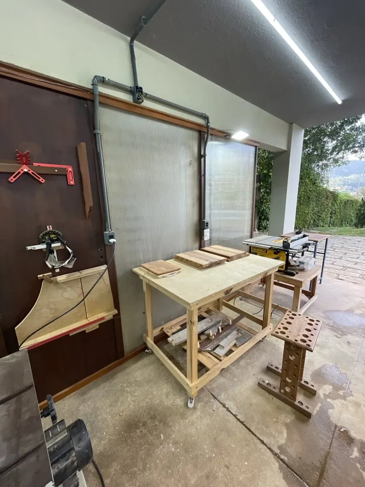

Tábuas de corte com curvas acentuadas: gabaritos e tupia laminadora
Como fazer o gabarito, escolher a fresa, acertar o sentido de avanço, vencer a fibra nas curvas fechadas e calcular o recuo da canaleta com a copiadora.
Tábuas com curvas fechadas, alças recortadas e canaletas que acompanham o contorno são bonitas e difíceis de fazer à mão livre. O caminho seguro e repetível é o gabarito: uma forma de MDF que a tupia laminadora copia com uma fresa de rolamento. Este artigo mostra como pensar o gabarito, o sentido do corte e a canaleta.

O fluxo de trabalho
- Faça o gabarito em MDF de 6 a 15 mm. Corte perto da linha e acerte com lima, grosa e lixa. Qualquer ondulação do gabarito vai aparecer na tábua.
- Risque a tábua pelo gabarito e recorte na serra de fita deixando cerca de 2 mm de sobra. Sobra demais força a fresa e aumenta o risco de lascar.
- Prenda o gabarito na tábua com fita dupla-face, grampos fora do caminho da fresa ou parafusos em pontos que depois serão escondidos.
- Refile com a tupia, deixando o rolamento correr no gabarito.
As fresas
| Fresa | Rolamento | Para quê |
|---|---|---|
| Reta de refilar (flush trim) | Na ponta | Gabarito embaixo da peça |
| Reta copiadora (pattern) | Junto da haste | Gabarito em cima da peça |
| Meia-cana (core box) | Sem rolamento | Canaleta para o caldo, com copiadora |
| Boleado (round-over) | Na ponta | Arredondar as bordas no fim |
Curvas internas nunca podem ter raio menor que o raio da fresa. Com uma fresa de 12,7 mm de diâmetro, o menor raio interno possível é de 6,35 mm. Desenhe o gabarito respeitando isso.
O sentido do avanço
A fresa gira no sentido horário, vista de cima. O avanço deve fazer a fresa morder a madeira contra o giro, nunca a favor: no contorno externo, a tupia anda no sentido anti-horário; num vazado, no sentido horário. Avançar no sentido errado faz a tupia "correr" sozinha e pode arrancar um pedaço da tábua.
Curvas acentuadas e a direção da fibra
Numa curva, metade do caminho é cortada no sentido favorável da fibra e metade contra. A regra, a mesma das ferramentas manuais, é cortar "descendo o morro": do ponto mais alto da curva para baixo, dos dois lados. Contra a fibra, a fresa tende a levantar lascas, principalmente nos topos e em madeiras duras e quebradiças, como a maçaranduba.
- Troque a fresa nos trechos difíceis: vire a peça e use a fresa com o rolamento no outro extremo. O gabarito passa para o outro lado e o corte passa a descer a fibra, sem inverter o sentido de avanço.
- Tire pouco de cada vez: passadas leves, com a tupia em rotação alta e movimento contínuo, sem parar num ponto (parar queima a madeira).
- Nas pontas de fibra curta, como alças estreitas, deixe o recorte da serra mais justo, para a fresa quase só alisar.
A canaleta que acompanha a curva
Para a canaleta do caldo, use uma copiadora (anel guia) na base da tupia, com a fresa meia-cana no centro. O anel corre num segundo gabarito, interno, e a fresa corta recuada em relação a ele.
Com copiadora de 16 mm e fresa de 10 mm, o corte fica 3 mm para dentro do gabarito. Faça o gabarito da canaleta com esse recuo e aprofunde em duas ou três passadas, até uns 5 a 6 mm.